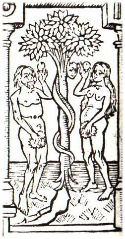
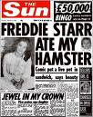

The art of
making pictorial statements in a precise and repeatable form is one that we have long
taken for granted in the West. But it is usually forgotten that without prints and
blueprints, without maps and geometry, the world of modern sciences and technologies would
hardly exist. In the time of Ferdinand and Isabella and other maritime monarchs, maps were
top-secret, like new electronic discoveries today. When the captains returned from their
voyages, every effort was made by the officers of the crown to obtain both originals and
copies of the maps made during the voyage. The result was a lucrative black-market trade,
and secret maps were widely sold. The sort of maps in question had nothing in common with
those of later design, being in fact more like diaries of different adventures and
experiences. For the later perception of space as uniform and continuous was unknown to
the medieval cartographer, whose efforts resembled modern nonobjective art. The shock of
the new Renaissance space is still felt by natives who encounter it today for the first
time. Prince Modupe tells in his autobiography, I Was a Savage, how he had learned
to read maps at school, and how he had taken back home to his village a map of a river his
father had traveled for years as a trader.
While essential to navigation, maps are the most
radical form of reductionism, and it easy to forget that they represent only abstract
spatial relations and positional information. Maps rely on the sparsest physical data,
e.g. rivers and mountains, and over-simplification at ground level often leads to errors.
A number of Military disasters resulted from misinterpreting the blank spaces on maps.
…my father thought the whole idea was
absurd. He refused to identify the stream he had crossed at Bomako, where it is no deeper,
he said, than a man is high, with the great widespread waters of the vast Niger delta.
Distances as measured in miles had no meaning for him…. Maps are liars, he told me
briefly. From his tone of voice I could tell that I had offended him in some way not known
to me at the time. The things that hurt one do not show on a map. The truth of a place is
in the joy and the hurt that come from it. I had best not put my trust in anything as
inadequate as a map, he counseled…. I understand now, although I did not at the time,
that my airy and easy sweep of map-traced staggering distances belittled the journeys he
had measured on tired feet. With my big map-talk, I had effaced the magnitude of his
cargo-laden, heat-weighted treks.
The Greeks and Romans had no universal
scientific language to describe natural phenomena.
A picture is worth a 1000 words. However verbal description is a valuable complement to an
image.
All the
words in the world cannot describe an object like a bucket, although it is possible to
tell in a few words how to make a bucket. This inadequacy of words to convey visual
information about objects was an effectual block to the development of the Greek and Roman
sciences. Pliny the Elder reported the inability of the Greek and Latin botanists to
devise a means of transmitting information about plants and flowers:
For example, you cannot tell from the photo
below that blackthorn is a deciduous Eurasian shrub whose fruit is used to flavor sloe
gin.
Hence it is that other writers have confined
themselves to a verbal description of the plants; indeed some of them have not so much as
described them even, but have contented themselves for the most part with a bare recital
of their names…
We are
confronted here once more with that basic function of media—to store and to expedite
information. Plainly, to store is to expedite, since what is stored is also more
accessible than what has to be gathered. The fact that visual information about flowers
and plants cannot be stored verbally also points to the fact that science in the Western
world has long been dependent on the visual factor. Nor is this surprising in a literate
culture based on the technology of the alphabet, one that reduces even spoken language to
a visual mode. As electricity has created multiple non-visual means of storing and
retrieving information, not only culture but science also has shifted its entire base and
character. For the educator, as well as the philosopher, exact knowledge of what this
shift means for learning and the mental process is not necessary.

Biblia Pauperum
Well before
Gutenberg's development of printing from movable types, a great deal of printing on paper
by woodcut had been done. Perhaps the most popular form of this kind of block printing of
text and image had been in the form of the Biblia Pauperum, or Bibles of the Poor.
Printers in this woodcut sense preceded typographic printers, though by just how long a
period it is not easy to establish, because these cheap and popular prints, despised by
the learned, were not preserved any more than are the comic books of today. The great law
of bibliography comes into play in this matter of the printing that precedes Gutenberg:
"The more there were, the fewer there are." It applies to many items besides
printed matter—to the postage stamp and to the early forms of radio receiving sets.
Medieval and
Renaissance man experienced little of the separation and specialty among the arts that
developed later. The manuscript and the earlier printed books w ere read aloud, and poetry
was sung or intoned. Oratory, music, literature, and drawing were closely related. Above
all, the world of the illuminated manuscript was one in which lettering itself was given
plastic stress to an almost sculptural degree. In a study of the art of Andrea Mantegna,
the illuminator of manuscripts, Millard Meiss mentions that, amidst the flowery and leafy
margins of the page, Mantegna's letters "rise like monuments, stony, stable and
finely cut…. Palpably soled and weighty, they stand boldly before the colored ground,
upon which they often throw a shadow…."

The same
feeling for the letters of the alphabet as engraved icons has returned in our own day in
the graphic arts and in advertising display. Perhaps the reader will have encountered the
sense of this coming change in Rimbaud's sonnet on the vowels, or in some of Braque's
paintings. But ordinary newspaper headline
style tends to push letters toward the iconic form, a form that is very near to auditory
resonance, as it is also to tactile and sculptural quality.
Perhaps the
supreme quality of the print is one that is lost on us, since it has so casual and obvious
an existence. It is simply that it is a pictorial statement that can be repeated precisely
and indefinitely—at least as long as the printing surface lasts. Repeatability is the
core of the mechanical principle that has dominated our world, especially since the
Gutenberg technology. The message of the print and of typography is primarily that of
repeatability. With typography, the principle of movable type introduced the means of
mechanizing any handicraft by the process of segmenting and fragmenting an integral
action. What had begun with the alphabet as a separation of the multiple gestures and
sights and sounds in the spoken word, reached a new level of intensity, first with the
woodcut and then with typography. The alphabet left the visual component as supreme in the
word, reducing all other sensuous facts of the spoken word to this form. This helps to
explain why the woodcut, and even the photograph, were so eagerly welcomed in a literate
world. These forms provide a world of
inclusive gesture and dramatic posture that necessarily is omitted in the written word.
The print
was eagerly seized upon as a means of imparting information, as well as an incentive to
piety and meditation. In 1472 the Art of War by Volturius was printed at Verona,
with many woodcuts to explain the machinery of war. But the uses of the woodcut as an aid
to contemplation in Books of Hours, Emblems, and Shepherds' Calendars continued for two
hundred years on a large scale.
Prints, like maps, provide only a minimum of
visual information to impart an idea. Imagination fills in the gaps involuntarily, a
potent source of the esthetic delight children experience when they read comic books. On
any blank space human fancy can create an alternate world, and 'give to airy nothing a
local habitation and a name.'
It is
relevant to consider that the old prints and woodcuts, like the modern comic strip and
comic book, provide very little data about any particular moment in time, or aspect in
space, of an object. The viewer, or reader, is compelled to participate in completing and
interpreting the few hints provided by the bounding lines. Not unlike the character of the
woodcut and the cartoon is the TV image, with its very low degree of data about objects,
and the resulting high degree of participation by the viewer in order to complete what is
only hinted at in the mosaic mesh of dots. Since the advent of TV, the comic book has gone
into a decline.
The comic book is a cool involving medium
It is,
perhaps, obvious enough that if a cool medium involves the viewer a great deal, a hot
medium will not. It may contradict popular ideas to say that typography as a hot medium
involves the reader much less than did manuscript, or to point out that the comic book and
TV as cool media involve the user, as maker and participant, a great deal.
After the
exhaustion of the Graeco-Roman pools of slave labor, the West had to technologize more
intensively than the ancient world had done. In the same way the American farmer,
confronted with new tasks and opportunities, and at the same time with a great shortage of
human assistance, was goaded into a frenzy of creation of labor-saving devices. It would
seem that the logic of success in this matter is the ultimate retirement of the work force
from the scene of toil. In a word, automation. If this, however, has been the motive
behind all of our human technologies, it does not follow that we are prepared to accept
the consequences. It helps to get one's bearings to see the process at work in remote
times when work meant specialist servitude,
and leisure alone meant a life of human dignity and involvement of the whole man.
The print in
its clumsy woodcut-phase reveals a major aspect of language; namely, that words cannot
bear sharp definition in daily use. When Descartes surveyed the philosophical scene at the
beginning of the seventeenth century, he was appalled at the confusion of tongues and
began to strive toward a reduction of philosophy to precise mathematical form. This striving for an irrelevant precision served
only to exclude from philosophy most of the questions of philosophy; and that great
kingdom of philosophy was soon parceled out into the wide range of uncommunicating
sciences and specialties we know today. Intensity of stress on visual blueprinting and
precision is an explosive force that fragments the world of power and knowledge alike. The increasing precision and quantity of visual
information transformed the print into a three-dimensional world of perspective and fixed
point of view. Hieronymus Bosch, by means of paintings that interfused medieval
forms in Renaissance space, told what it felt like to live straddled between the two
worlds of the old and the new during this revolution. Simultaneously, Bosch provided the
older kind of plastic, tactile image but placed it in the intense new visual perspective.
He gave at once the older medieval idea of unique, discontinuous space, superimposed on
the new idea of uniform, connected space. This he did with earnest nightmare intensity.
Lewis
Carroll took the nineteenth century into a dream world that was as startling as that of
Bosch, but built on reverse principles. Alice in Wonderland offers as norm that
continuous time and space that had created consternation in the Renaissance. Pervading
this uniform Euclidean world of familiar space-and-time, Carroll drove a fantasia of
discontinuous space-and-time that anticipated Kafka, Joyce, and Eliot. Carroll, the
mathematical contemporary of Clerk Maxwell, was quite avant-garde enough to know
about the non-Euclidean geometries coming into vogue in his time. He gave the confident
Victorians a playful foretaste of Einsteinian time-and-space in Alice in Wonderland. Bosch
had provided his era a foretaste of the new continuous time-and-space of uniform
perspective. Bosch looked ahead to the modern world with horror, as Shakespeare did in King
Lear, and as Pope did in The Dunciad. But Lewis Carroll greeted the electronic
age of space-time with a cheer.
Nigerians
studying at American universities are sometimes asked to identify spatial relations.
Confronted with objects in sunshine, they are often unable to indicate in which direction
shadows will fall, for this involves casting into three-dimensional perspective. Thus sun,
objects, and observer are experienced separately and regarded as independent of one
another. For medieval man, as for the native,
space was not homogeneous and did not contain objects. Each thing made its own
space, as it still does for the native (and equally for the modern physicist). Of
course this does not mean that native artists do not relate things. They often contrive
the most complicated, sophisticated configurations. Neither artist nor observer has the
slightest trouble recognizing and interpreting the pattern, but only when it is a
traditional one. If you begin to modify it, or translate it into another medium (three
dimensions, for instance), the native fails to recognize it.
An
anthropological film showed a Melanesian carver cutting out a decorated drum with such
skill, coordination, and ease that the audience several times broke into applause—it
became a song, a ballet. But when the anthropologist asked the tribe to build crates to
ship these carvings in, they struggled unsuccessfully for three days to make two planks
intersect at a 90-degree angle, then gave up in frustration. They couldn't crate what they
had created.
In the low
definition world of the medieval woodcut, each object created its own space, and there was
no rational connected space into which it must fit. As the retinal impression is
intensified, objects cease to cohere in a space of their own making, and instead, become
"contained" in a uniform, continuous, and "rational" space. Relativity
theory in 1905 announced the dissolution of uniform Newtonian space as an illusion or
fiction, however useful. Einstein pronounced the doom of continuous or
"rational" space, and the way was made clear for Picasso and the Marx brothers
and MAD.